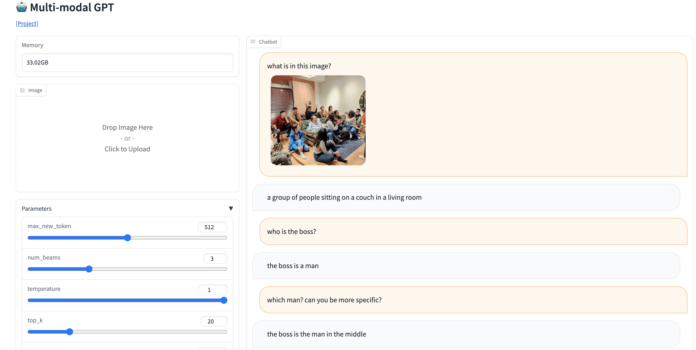
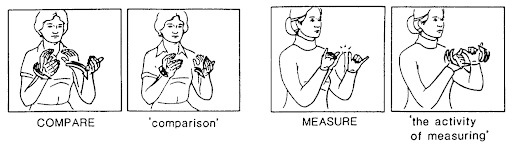

Week 12 語意與文化
2023-05-22
語言、認知與多模態
Embodied linguistics （具身語言學）(Guan 2019)
身體、心靈與文化的一體： 在認知語言學領域中，“具身”或”體現”（Embodiment）指的是人類認知過程（如語言）的形成，受到我們的身體和由其提供的感官經驗的顯著影響。
“體現”強調我們理解和使用語言的方式是基於物理經驗的。我們感知世界、與之互動以及理解世界的方式，基本上是由我們的身體感覺和動作塑造的。這種觀念與認知作為與物理經驗分離的抽象精神過程的更傳統觀點形成對比。
語言、認知與多模態
metaphor
隱喻也是一種神經機制，這種用於感覺運動的神經機制創建了抽象推理的形式（同時也具備潛力與侷限）。
我們在語言中使用隱喻的方式。往往反映出具身的經驗。例如，使用隱喻 “我感到沮喪/難過”來表達悲傷，是基於與悲傷感覺相關的姿態和能量水平的身體經驗。
語言、認知與多模態
\(\mu\) 波抑制：具身語言活動的神經生理指標
\(\mu\) 波是大腦的一種特定類型的腦波，通常在頻率範圍 8-13 Hz 之間。它們主要出現在感覺運動皮質（大腦負責處理身體運動和感覺的區域），特別是在休息和閉眼時比較顯著。
有些研究顯示，當我們觀察他人的動作或想像自己進行某種動作時，\(\mu\) 波會被抑制。這種現象被認為是體現認知的一種表現，因為它顯示了我們的大腦在觀察他人的行為或想像自己的行為時，如何模擬這些行為。這種模擬可能有助於我們理解他人的行為和意圖，以及想像和計劃自己的行為。
語言、認知與多模態
sensori-motion and cognition
感官（Sensory）和運動（Motion）是兩個在神經科學和心理學中經常被討論的概念。感官指的是我們的感官系統（視覺、聽覺、嗅覺、味覺和觸覺）以及我們如何通過這些系統來感知周圍的世界。運動則是指我們的身體運動和動作，這通常涉及到我們的肌肉和骨骼系統以及大腦中控制這些系統的區域。
當我們談論感官和運動的交互作用時，我們可能會討論如何將我們的感官輸入（例如，看到一個球接近）轉化為適當的運動反應（例如，揮棒擊球）。這種過程涉及到大腦中多個區域的協同工作，並且是我們日常生活中的許多活動的基礎。
語言處理也是如此。語言也是一種感官運動活動，它涉及到我們的感官系統（例如，聽覺和視覺）和運動系統（例如，口腔和手部運動）的協同工作。這種感官運動活動的特性，使得語言處理與其他感官運動活動有許多相似之處。
傳統上語言理解模型，如情景理論 (situation theory) 認爲，語言理解是一種抽象的、非具身的、符號性的過程，與感官運動活動無關。構建被描述的情景的心理表徵就是理解。如此觀點難以回答符碼接地 (symbol grounding) 問題 。
sesorimotor memory trace
對於「桌子」一詞的理解，來自有關桌子的記憶印痕（桌子的形狀、大小、顏色等特徵）以及動作印痕（某人作出的和桌子相關的動作）產生共鳴。所以沒有語境時，這些提取就可能發生變異，隨着時間也會變化。
這些語言和環境中的接地 (grounding) 經驗（同時藉由手勢與注意力引導等機制），開始於語言習得的初始階段。這些經驗在語言習得的過程中，逐漸被語言符號所取代，但是這些經驗仍然存在於我們的大腦中，並且在我們使用語言時被激活。
語言、認知與多模態
手語、手勢（與體勢）、多模溝通
大多數語言學家終其一生，研究的只是一個語言學次領域或兩個領域之間的邊界。然而，真實語言是具身的、整合的、多模態的。
- The language-body relationship is complex. Manual gestures, shoulder shrungs, facial expressions and gaze movements, and postural or torso shifts, all add meaning to a spoken utterance (Hinnell 2020).
這和手相 (Palmistry)、面相 (Physiognomics)、骨相 (Phrenology) 等，判斷個性或一生運勢吉凶無關。
台灣多模態語料庫
手勢（與體勢） | Geature
手勢（gesture）是一種非語言的溝通方式，通常是指用手、手臂、肩膀、頭部、眼睛、嘴巴等身體部位的動作來表達意思。
可分許多類別，比方說
自我調適動作 (self-adaptor) 沒有概念意義，如說話時摸摸臉、抓抓頭髮、搓搓手等。（但有互動交際功能，如吸引他人注意）
節拍手勢 (beat gesture) 隨着講話的節奏，手上下或前後小幅度擺動。
指示手勢 (deictic gesture) 用手指或手掌指向說話現場某個人或物，或將討論的人事物分置在不同的空間位置。
表徵手勢 (emblematic gesture) 具有約定俗成意義，如揮手示意再見，豎起拇指表肯定。
表意手勢 (representational gesture) 比劃具體或抽象概念的意義，但沒有約定俗成的形式。
手勢（與體勢）
階段：preparation, stroke, retraction. (gesture onset and speech onset alignment)
與語言的合作關係：complementary, supplementary, or redundant.
cf. 政大中文口語語料庫
Movement notation systems
a missing type of IOL problem (yet important for multimodal communication).
Labanotation example [AP]
Labanotation or Kinetography Laban is a notation system for recording and analyzing human movement that was derived from the work of Rudolf Laban who described it in Schrifttanz (“Written Dance”) in 1928. His initial work has been further developed by Ann Hutchinson Guest and others, and is used as a type of dance notation in other applications including Laban Movement Analysis, robotics and human movement simulation.
- His initial work has been further developed by others, and is used as a type of dance notation in other applications including Laban Movement Analysis, robotics and human movement simulation.
(自然) 手語 | (natural) sign language
手語是一種完整的語言，能夠有效地傳達複雜的想法和觀念，不是一種簡單的手勢系統。
手語透過視覺-空間的方式進行溝通。就像口語語言一樣，手語包含有其自身的詞彙、語法和語用規則。每一種手語都有其特殊的結構和語義規則，所以我們不可以僅僅視其為簡單的身體手勢或是對口語語言的直接翻譯。
Natural sign languages such as ASL and BSL provide natural and efficient communication between deaf children and their peers, enabling the children to develop cognitively and emotionally.
uses the hands, facial expressions, eyebrow location, and other parts of the body as its articulators.
it is NOT the same as the gesturing that occurs in spoken language or ‘body language’.
NLP application
Figure illustrates the derivational process in ASL that is equivalent to the formation of the nouns comparison and measuring from the verbs compare and measure in English. Everything about the root morpheme remains the same except for the movement of the hands.
我們用 cool 本週的講義來粗略理解一下。
人造手語 | artificial sign language
Construct your own (concise) Sign Language
- places = consonants?
- movement = vowels?
- handshape = tone ?
人造手勢語言謎題練習
“Cistercian sign language”
遊戲時間
- 先找好組員。
- 設計一套迷你手語，可以用來傳達一些簡單的訊息。（以下四句）
- 溝通與訓練好之後，請一組一組上台表演。（分出一個人與其他所有人一起來猜測）
訓練語料
我是台大的學生。
台大有很大的校園。
台大學生人數很多。
台大校園裡到處都看得到學生(們)。
作業：
（設計手語）minimal sign language design
自己決定詞彙量與構詞語法規則與對應翻譯句子，錄製影片（可提供部分的詞彙）。
參考學長姐的作業